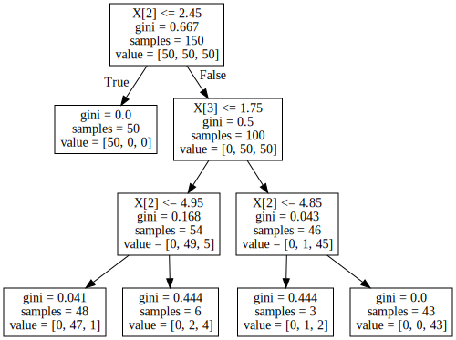
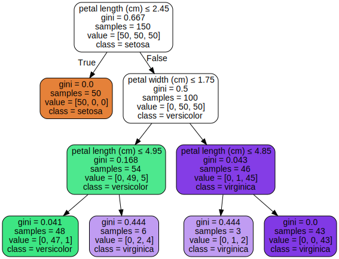

import os
# On Windows you need to set your path to graphviz (C:\\Program Files (x86)\\Graphviz2.38\\bin\\ for example)
path_to_graphviz = 'C:\\Program Files (x86)\\Graphviz2.38\\bin\\'
os.environ["PATH"] += os.pathsep + path_to_graphvizTrain a classifier on iris dataset
from sklearn.datasets import load_iris
from sklearn import tree
iris = load_iris()
clf = tree.DecisionTreeClassifier(max_depth=3)
clf = clf.fit(iris.data, iris.target)import graphviz
# Calling `export_graphviz` with `out_file=None` returns GraphViz representation (DOT format) of the decision tree as string.
dot_data = tree.export_graphviz(clf, out_file=None)
# Convert the source code string to be rendered by graphviz
graph = graphviz.Source(dot_data)
graph
Passing some parameters makes the graph more appealing.
dot_data = tree.export_graphviz(clf, out_file=None,
feature_names=iris.feature_names, # shows feature names instead of feature index
class_names=iris.target_names, # shows Names of each of the target classes in ascending numerical order.
filled=True, # coloring nodes by their class (or value for regression)
rounded=True, # draw node boxes with rounded corners
special_characters=True)
graph = graphviz.Source(dot_data)
graph 
References
https://scikit-learn.org/stable/modules/tree.html#decision-trees